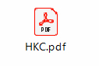
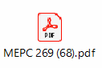
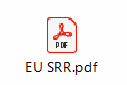

Our Services 
Our Services
IHM
Inventory of Hazardous Material
Marine Mechanics has a strong team of DNV-GL trained IHM experts who can handle IHM for both new builds and existing ships in a professional manner, below script will give a brief description of IHM, its importance, process of obtaining and maintaining the IHM for your ships.
Inventory of Hazardous Materials (IHM) is a structured system to control hazardous materials onboard ships and achieve compliance with the EU Ship Recycling Regulation (EU SRR) and Hong Kong Convention (HKC) for the Safe and Environmentally Sound Recycling of Ships.
From December 31, 2020, any ship which is 500 GT or over, regardless of flag, will require a valid and certified IHM on board if calling at an EU port or anchorage. Non-EU flagged vessels can also be certified against EU SRR by complying with the HKC IHM requirements.
IHM is a list that provides ship-specific information on the actual hazardous materials present on board, their location, and approximate quantities. The IHM has following parts:
The IHM Part I shall be prepared and certified for new ships and ships in operation and shall be maintained and kept up to date during the operational life of the ship, while the IHM Part II & III are only required to be prepared when the ship is decided to be sent for recycling. For the preparation of IHM Part I, hazardous materials set out in appendix 1 and 2 of the HKC or Annex I and II of the EU SRR shall be investigated.
As per EU SRR guidelines, the IHM maintenance may be maintained by a HazMat expert company, such as Marine Mechanics, we have the experience and ability to undertake a comprehensive check and can provide reliable, independent results. Should asbestos be found during IHM maintenance, engaging a specialist maritime asbestos consultant is key to ensuring you make the correct choices regarding removal and management of asbestos on your vessel. We will also always keep the IHM Part 1 up to date ready for inspection from flag state or className.
Why is IHM Important?
From the mid-1980s, the center of the ship scrapping industry shifted towards Asia, to India, Bangladesh, and Pakistan. This industry was, and still is, virtually unregulated and has one of the worst safety records of any industry. It also causes massive environmental pollution. Initially, there was little awareness or acknowledgement of the appalling working conditions and environmental pollution. This guidance subsequently fed into discussions at the International Maritime Organization (IMO), which resulted in the IMO Guidelines on Ship Recycling, adopted by member states in December 2003. These voluntary guidelines introduced the concept of a ‘Green Passport’ Inventory for the first time. In parallel with this activity, the International Labor Organization (ILO) developed Guidelines on Safety and Health in Ship Breaking in Asia and Turkey and the Basel Convention published guidance on Environmentally Sound Management of Dismantling of Ships.
Further, IMO adopted “The Hong Kong International Convention for the safe of environmentally sound recycling of ships” in the year 2009 followed by the EU Ship Recycling Regulation (EU SRR) in 2013 that requires every ship calling at EU Port to carry an inventory of hazardous material (IHM) verified by the relevant administration or authority and specifying the location and approximate quantities of those materials.
A comprehensively compiled IHM can help you minimize risk, potential liabilities, and enhance the safety of your ships’ crews by identifying, recording, and controlling hazardous materials onboard your ships, in line with existing and forthcoming legislation.
As well as assisting with your in-house management systems, you can demonstrate your commitment to safe and environmentally sound practices at the end of your ship’s life.
Initial IHM Survey & Part 1 Preparation
The survey can take place while the vessel is at sea or in port and our surveying teams / HazMat experts are able to meet and leave the vessel at most ports internationally.The IHM should undergo annual verification to ensure its relevance and a full re-survey of the vessel carried out every five years.
Hazards that are commonly found on vessels include Asbestos, polychlorinated biphenyls (PCBs), Organotin Compounds, including TBTs and microbiological contaminants, Ozone Depleting Substances (ODS), Heavy Metals, Polybrominated biphenyl (PBBs), Polybrominated diphenyl ethers (PBDEs), Polychlorinated naphthalene’s (PCN - more than 3 chlorine atoms), Radioactive substances, Certain short chain chlorinated paraffins (SCCP - Alkanes, C10-C13), Perfluorooctanesulfonic Acid (PFOS) and Hexabromocyclododecane (HBCDD).
IHM Maintenance post Initial Survey and issuance of SOC
The EU SRR requires proper maintenance and update of the IHM throughout the operational life of ships for which the Regulation applies. This means that if any new or different machinery or equipment is added to, removed, or replaced, the IHM must be updated by collection of suppliers' declarations.
Maintaining compliance for the entire service life of a vessel does not happen by itself. Any change on board must be notified and an updated IHM-report is required every time something changes. For example: after a refit or intensive docking, it is possible that hazardous materials have been brought onboard. Our IHM Maintenance service simplifies the update process, prevents unnecessary re-sampling, and reduces costs. Completing an IHM survey and possessing an approved report, is only the beginning of being compliant. It is the ship owner's responsibility to ensure continuous conformity of the inventory.
Marine Mechanics digital maintenance system makes it easier to maintain your IHM report during the full life cycle of the ship. Why this is so convenient? We simplify work, prevent unnecessary re-sampling, and reduce costs with our IHM Maintenance Service.
It should be noted that the IHM should be updated according to the requirements for new ships as stipulated in the relevant provisions of the IMO guidelines and in chapter 5.1 of this guidance. The respective changes to the IHM should be made accordingly and all the relevant documentation (e.g., MD and SDoC in case of machinery or equipment is added or sampling reports in case of random sampling) should be collected and maintained in the ship’s archive.
MMPL IHM Maintenance software can be used to support the IHM development and maintenance process and the management of all the relevant documents, information, and data.After the preparation of the IHM, and its certification by className, our team can take care of the maintenance of the IHM with a digital solution to ensure it is constantly up-to-date and to facilitate the renewal survey after 5 years.
With internationally recognized laboratories, and a specialist team of hazardous materials experts, analysts, and consultants strategically located across the globe, our team delivers trusted consultancy, surveying, testing and management for asbestos and other hazardous material management to fleets and vessels throughout the world.
Asbestos Removal & Management Plans
In the event whereby removal of ACM will not take place immediately, or if the ACM are non-friable if left undisturbed (e.g., low risk rating), stakeholders must prepare an Asbestos Management Plan and enforce the Plan to maintain an “asbestos safe environment” (note: this is subject to local Asbestos Abatement legislation or regulations).
The AMP essentially set forth procedures and protocols on how to maintain an asbestos safe environment, including on how to avoid disturbing ACM; establish fixed period for regular inspection of ACM; and Safety Procedures during emergency (e.g., asbestos fibres becoming airborne, and urgent repair works).
Disposal of asbestos waste can be an intricate and problematic proceeding due to different national legislation and regulations. Marine Mechanics has international partners dealing with asbestos waste disposal, please contact us for more details.
References
The Hong Kong International Convention for the Safe and Environmentally Sound Recycling of ships
Resolution MEPC269(68) – 2015 Guidelines for the Development of the Inventory of Hazardous MaterialDeclaration
COMMISSION REGULATION 1257/2013 - EU Regulation on Ship Recycling (SRR) Regulation (EU) and amending Regulation (EC) No 1013/2006 and Directive 2009/16/EC
